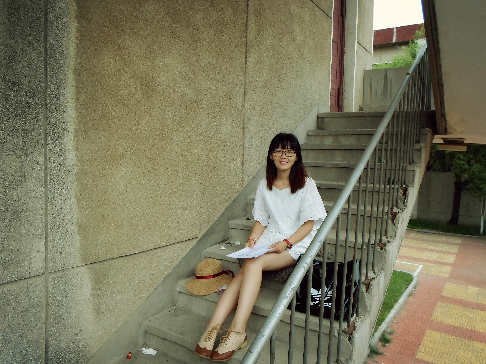
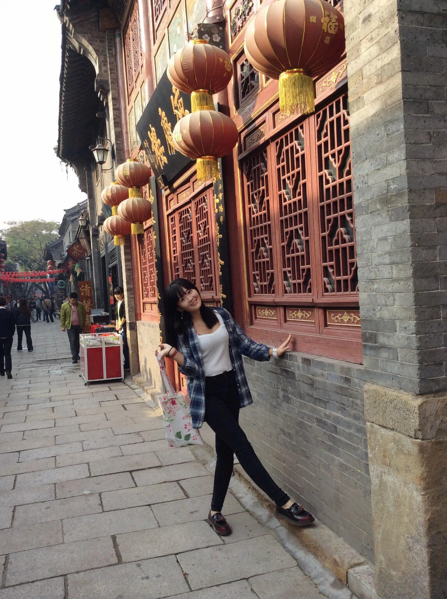
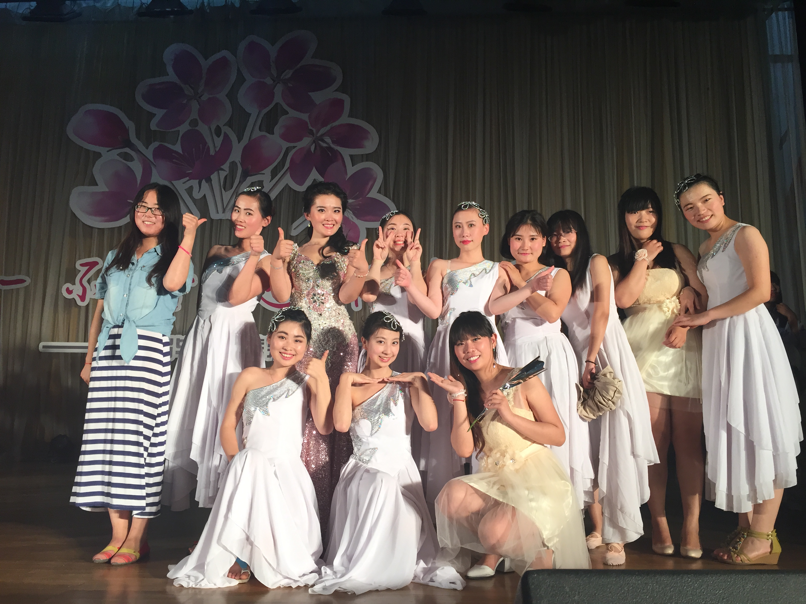
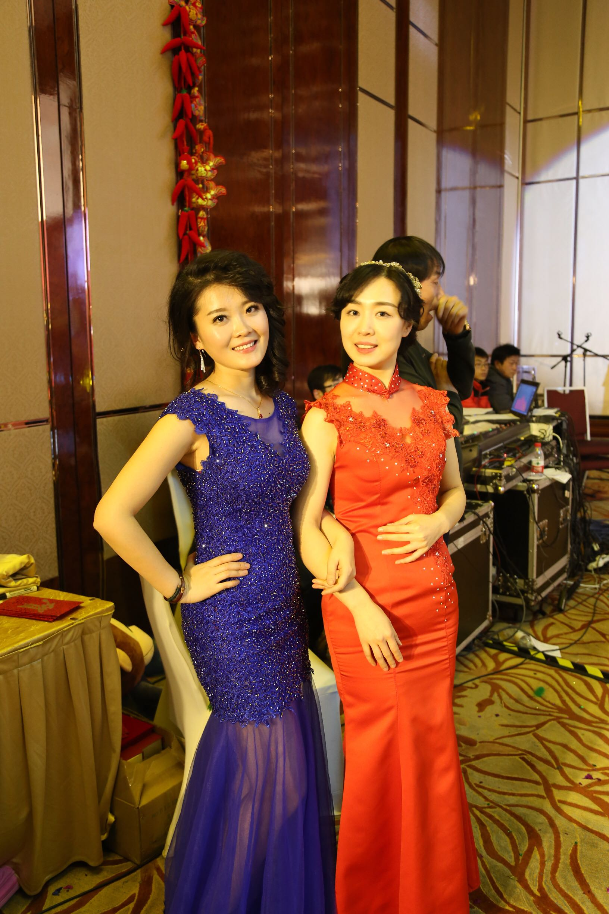

正文: 不要拦我，我也要回答这个问题。
首先两点
1、因为骨架比较大，然后不算矮，但是脸不长胖是真的。十几岁婴儿肥，后来青春期长高变瘦，然后又长胖，又变瘦，只管看图
2、如果下图中遇见一图有两个长得很相似的人儿，请自动视微胖一点的那只为我。
从生下来，我就比妹妹胖四两到后来胖四斤，再到后来，胖XX斤。
初中时候，婴儿肥。
因为脸真的不容易胖，脸胖的话就说明身上已经胖了很多了。但那时候身材不好也就90多斤。
上学期间，太胖了。当然坐姿也有关系。
高中110左右。真的胖到眼睛都看不到了。
然后来了，对比照，妹妹当时105斤左右。啊好恐怖。
因为麻麻喜欢我跟妹妹穿一样的衣服，但是因为对比太明显，所以痛定思痛我就开始减肥之路。
刚上大学，那时候看起来真的小粗腿。108斤 166CM，然后不会打扮穿运动鞋，整个人又矮又胖
然后大二夏天，当时忙着语言考试，夏天瘦了挺多，但长了个子。106-108斤左右。
然后差不多大二冬天的时候，衣服穿的厚了些，差不多112-115左右。但是身材变好了很多。
一直到大二下学期的夏天，维持不变的体重，一直保持在110左右，167CM。
手臂还有大腿还是粗粗的。我属于肉肉的那种类型，小手小脚都是胖乎乎的，但是肉比较紧致。
夏天开始喜欢跑步，爱上健身了。
 夏天的时候，和妹妹一起穿裙子就很自信啦。
夏天的时候，和妹妹一起穿裙子就很自信啦。健身之后的变化就是肉变紧致，看当时的腿型和胳膊，几乎没有赘肉，但是当然体重没什么变化，就是看起来像瘦了很多的样子。变瘦的最大体验于我来说就是可以穿平底鞋了，胖的时候几乎不爱穿平底鞋，但是瘦啦就没有这个烦恼了。
大三秋天。全家出游，头发也开始长长了
那时候觉得身材好棒。
然后期间参加活动。穿高跟鞋172左右。当时体重112，但是锁骨胳膊都很美。
大三下学期的夏天，在学校海边。那是个特别美的夏天。那段时间心情好又没烦恼，几乎天天锻炼，当时瘦到苹果肌都出来了。
大四上学期的秋天。
然后就到了可以给摄影朋友当模特的阶段啦。就在大四过年实习到年后的几个月，因为工作和环境的变化，加上锻炼变少，坐着的时间变多，年后长了一点肥肉。脸蛋也变胖了一点点。
过年期间，前我后妹妹。
然后就一直忙于工作。在这时候，体重上升到115-117左右。人生高峰啊。
 然后就到了大学毕业。。
然后就到了大学毕业。。为了毕业照，提前锻炼，回学校的时候又恢复到113斤左右。但是脸还是瘦，不过五官已经很立体很明显了。眼睛也变大了。
 然后毕业照
然后毕业照毕业晚会，那个头发做的很高的好显老的就是我

 当时工作初期。回母校，那时候头发还是长长的。就是大腿还是壮壮的。
当时工作初期。回母校，那时候头发还是长长的。就是大腿还是壮壮的。

 然后又开始变胖了，这个时候要给女孩子们一个建议，就是选择合适自己的衣服，当时我差不多116斤-118斤左右，167。
然后又开始变胖了，这个时候要给女孩子们一个建议，就是选择合适自己的衣服，当时我差不多116斤-118斤左右，167。 夏天来了
夏天来了 工作什么的一切定下来之后就开始健身啦。又变瘦了一点，和家人一起去游泳，游泳真的对身材很有帮助，一定要坚持。夏天112斤。
工作什么的一切定下来之后就开始健身啦。又变瘦了一点，和家人一起去游泳，游泳真的对身材很有帮助，一定要坚持。夏天112斤。 然后秋天。运动的话我喜欢骑车游泳然后跑步瑜伽。在健身房可以练习动感单车。108-110斤
然后秋天。运动的话我喜欢骑车游泳然后跑步瑜伽。在健身房可以练习动感单车。108-110斤
 步入正轨之后开始注意饮食和运动，每周都坚持三天健身房跑步游泳出汗，所以体重没怎么下降但是身体感觉匀称了很多。
步入正轨之后开始注意饮食和运动，每周都坚持三天健身房跑步游泳出汗，所以体重没怎么下降但是身体感觉匀称了很多。十月份的时候。108-110上下浮动。上几张最近的图

其实体重数字并不是那么关键，一看身高二看脂肪含量。可能你觉得重了但是身材变得前凸后翘紧致很多，所以 注意运动注意休息注意饮食，你就会变得好美腻啦。
都说大学毕业后，体重暴增多数是因为压力大或者环境变化生活习惯变差，
本来每天单一复杂的工作需要我们坐着，长久下去一定会变胖的，
所以工作安定下来一定要去锻炼，过了毕业的这段时期，就不会变化太大了。
冬天到了外出锻炼有点懒，不过等我瘦到105斤左右我一定会再来更新哒！！
最后上两张证件照，纪念那些年120的小圆脸蛋。
坚持就是胜利，加油